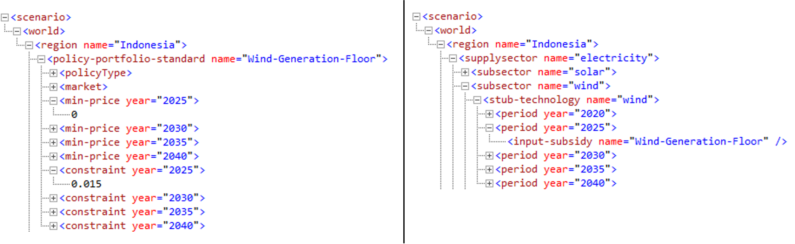
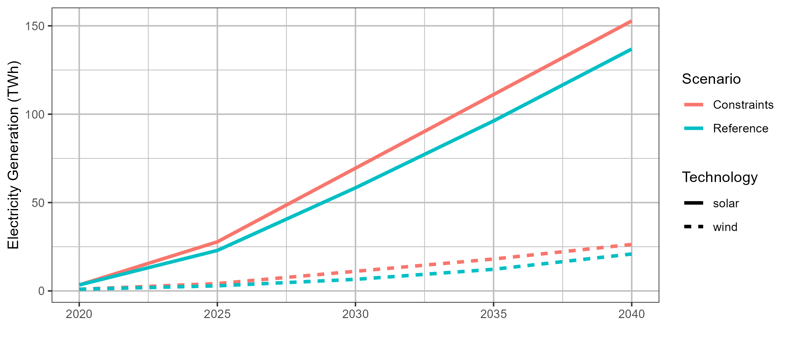
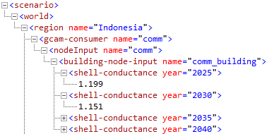
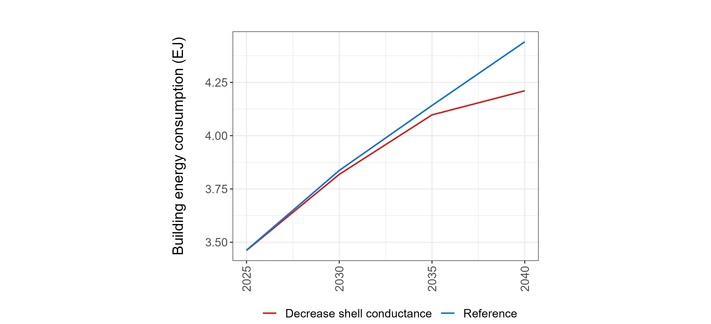

Key Links

| Description | Link |
|---|---|
| Official Documentation | http://jgcri.github.io/gcam-doc/index.html |
| FAQs, issues and discussions | https://github.com/JGCRI/gcam-core/discussions |
Tutorials
GCAM 6.0
| File | Description | Location |
|---|---|---|
| gcam6p0_walkthrough.pdf | GCAM 6.0 walkthrough presentation | Link |
GCAM 5.4
| File | Description | Location |
|---|---|---|
| gcam5p4_overview.pdf | GCAM 5.4 overview presentation | Link |
| gcam5p4_walkthrough.pdf | GCAM 5.4 walkthrough presentation | Link |
GCAM Software Map

Scenario Adjustments
Electricity Generation Mix
Note: Last Tested using GCAM 6.0
| Files Used | Description | Link |
|---|---|---|
| indonesia_electricity_generation_constraints.xml | Setting constraints: floors for wind and solar; ceiling for coal | Link |
| indonesia_electricity_generation_techs.xml | Applying constraints to electricity generation technologies | Link |
Goal
This example demonstrates how to set floors and ceilings for electricity generation by fuel in GCAM. We will set floors (minimum required generation amounts) for wind and solar and a ceiling (maximum generation amount) for coal from 2025 through 2040.
Approach
We can use a policy-portfolio-standard to set floors and
ceilings for each fuel. This will decrease (increase) the cost of the
electricity generation technologies until the floor (ceiling) is
satisfied.
Background - Policy portfolio standards
A policy-portfolio-standard in GCAM is a policy that can be
used to implement taxes, subsidies, floors, ceilings, and constraints.
Taxes and subsidies can be specified when the exact amount to be added
or subtracted to the price is known. However, a
policy-portfolio-standard can also contain a
constraint, which acts as either a floor or ceiling for the
technology or technologies included. Exact constraints can also be
implemented. See the GCAM
Policy Examples documentation for more information on how to
implement these options.
GCAM Implementation
- Create a folder in the input directory eg.
./gcam-core/input/addons. - Download the example xml files electricity_generation_constraints.xml and electricity_generation_constraint_techs.xml to the folder.
- Within each
policy-portfolio-standardtag in the first XML, adjust the following:
-
constraintfor each year in which a floor is desired -
Set
min-priceto a large negative value for years in which an exact constraint, rather than a floor, is desired
- Within each
supplysectortag in the second XML, make sure that the correspondinginput-subsidyis added within each relevantperiodfor eachstub-technologyyou wish to include in the constraint.
Example XML structures
 Note:
min-price should be set to a large negative number (e.g.,
-10000) for years in which an exact constraint is desired rather than a
floor or ceiling. Otherwise, it can remain at the default (0).
- Save the XMLs and then point to them in your configuration file by
adding the lines:
<Value name = "scen">../input/addons//electricity_generation_constraints.xml</Value><Value name = "scen">../input/addons//electricity_generation_constraint_techs.xml</Value>
Example Output

Building Envelope Efficiency
Note: Last Tested using GCAM 6.0
| Files Used | Description | Link |
|---|---|---|
| buildings_shell_efficiency.xml | Modifies shell conductance to represent enhanced building envelope efficiency improvement | Link |
Goal
This example demonstrates how to modify building envelope efficiencies in GCAM. We will increase efficiency over time, which could be used to represent increasing compliance with the envelope efficiency component of building energy codes.
Approach
We can use GCAM’sshell-conductance parameter to represent
an increase in building envelope efficiency.
Background - Cooling Demand
Cooling demand in GCAM depends on the indoor-outdoor temperature
difference (measured using cooling degree days or CDD), the building’s
shell conductance, and the building’s external heat gains along with GDP
and price factors. For more details and to view the equation used to
calculate cooling demand, see the Building service
demand section of the GCAM
energy demand documentation. GCAM’s shell-conductance
parameter is the inverse of building envelope efficiency. Its units are
watts per square meter per degree Kelvin and it represents the amount of
heat transferred through the building’s exterior when there is a
difference between the indoor and outdoor temperature.
GCAM Implementation
- Create a folder in the input directory:
./gcam-core/input/addons. - Download the example xml file buildings_shell_efficiency.xml to the folder.
- Within each
gcam-consumertag in the XML, specify the desiredshell-conductancevalues for each year.
Example XML structure

- Save the xml and then point to it in your configuration file by
adding the line:
<Value name = "scen">../input/addons/buildings_shell_efficiency.xml</Value>
Example Output

Modifying technology costs - EVs
Note: Last Tested using GCAM 6.0
| Files Used | Description | Link |
|---|---|---|
| transportation_UCD_CORE.csv | XML containing reference transportation technology costs | Link |
| adjust_ev_tech_cost.xml | XML for modifying 4-wheel passenger BEV costs | Link |
Goal
This example demonstrates how to modify non-energy costs of transportation technologies in GCAM. We will decrease these costs for 4-wheel passenger BEVs from 2020 to 2050 to represent policies that lower EV costs.
Approach
We can use GCAM’s input-cost parameter, which represents
the non-energy costs of a given technology.
GCAM Implementation
- Create a folder in the input directory:
./gcam-core/input/addons. - Download the example xml file adjust_ev_cost.xml to the folder.
- In each appropriate
stub-technologytag (within eachtranSubsectortag) in the XML, set the desiredinput-costfor each year. Add othersupplysectortags to include technologies outside of 4-wheel LDVs.
Example XML structure

- Save the xml and then point to it in your configuration file by adding the line:
<Value name = "scen">../input/addons/adjust_ev_tech_cost.xml</Value>
Transportation Mode Shift - Share weights
Note: Last Tested using GCAM 6.0
| Files Used | Description | Link |
|---|---|---|
| adjust_shareweight_rail.xml | XML for setting passenger rail share weight dynamics | Link |
Goal
This example demonstrates how to adjust share-weights in GCAM. We will increase the share-weight of passenger rail transport over time to represent policies that increase rail infrastructure.
Approach
Since infrastructure development is a non-cost impact on rail transport,
we can use share weights to represent this impact. Share weights are
calibration parameters and not directly related to any “real-world”
value, so it is usually necessary to test a range of share weight
modifications to obtain the desired effect. The Model Interface query
transport subsector share-weights can be used to check the
reference share weights for transportation modes.
Background - Share weights
Share weights are assigned to different subsectors and technology
choices in GCAM to represent non-cost factors of consumer choice. They
are used primarily to calibrate market shares to historical data but can
also be modified to reflect factors such as infrastructure development
or shifting societal preferences. For more information on share weights
and how they are used in GCAM’s economic choice functions, see the GCAM economic
choice documentation. Share weights should not be used to represent
cost-related policies. Additionally, shareweight interpolation rules
(fixed, linear, or s-curve) can
be used to automatically interpolate shareweights between given years.
GCAM Implementation
- Create a folder in the input directory:
./gcam-core/input/addons. - Download the example xml file adjust_shareweight_rail.xml to the folder.
- Adjust share weights and interpolation rules (
linear,fixed, ors-curve) to the “Passenger Rail”tranSubsectortag in the XML. Add/ remove subsectors as desired.
Example xml structure

Note: The first
interpolation rule must include delete=“1” in order to override all of
the previous (default) interpolation rules.
- Save the xml and then point to it in your configuration file by
adding the lines:
<Value name = "scen">../input/addons/adjust_shareweight_rail.xml</Value>
gcamdata
Git
From Stash(Bitbucket) to Github
This section discussed how to push a development branch of GCAM from stash onto github.
From Stash to Github
- Create a new repository in github: https://github.com/new
- Give it a relevant name such as
gcam_v5p4_projectx - Copy the clone address of the new repo e.g. https://github.com/USERNAME/gcam_v5p4_projectx.git
- Push your local stash branch changes up to this branch:
git push -u origin https://github.com/USERNAME/gcam_v5p4_projectx.git - Continue to work stash branch as usual and also push up latest changes to github as above.